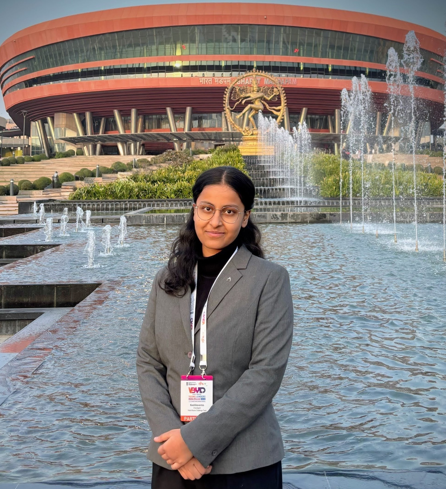

DEVELOPER • WRITER • RESEARCHER
Keshika
Verma
Incoming @University
Aspiring Computer Scientist + Writer | Founder @Digital Disha | Co-founder @KeyZen | Author of The Last Enemy: One World - One Fate | Java, HTML, CSS, JavaScript | Young Leader @Viksit Bharat Young Leaders Dialogue’26 | GsSOC'26| Enjoys building meaningful things through coding, writing, leadership and education |

About Me
Hi! I’m Keshika.
I enjoy combining technology, creativity and leadership in ways
that feel purposeful and human.
Over time, I’ve worked on digital literacy, storytelling, education, social impact and
innovation-led initiatives, always trying to create things that truly matter.
This website is my attempt to bring together the many sides of my life in one place
Click on the button below to read "Abhi toh bas shuruaat hai...", "About me" or "My Story" :))
Featured
Digital Disha
Digital Disha is a grassroots digital literacy program aimed at empowering rural students and students in less connected areas with the digital skills they need to succeed in the modern world.
View Initiative →Viksit Bharat Young Leader's Dialouge, 2026
Represented Chandigarh at Viksit Bharat Young Leader's Dialouge, 2026. Held at Bharat Mandapam, New Delhi, a major leadership experience that shaped my ideas, exposed me to policy and public problem-solving, and became an important part of my journey.
View Experience →KeyZen
A product that is revolutionizing how everyone learns to type.
Co-founder, CEO & CTO: Alankrit Verma
Co-founder, COO & Head of Product: Keshika Verma
The Last Enemy: One World - One Fate
My first published book exploring humanity, unity, and the deeper questions shaping our world. Set in 2048, The Last Enemy is not just a sci-fi novel about machines, it’s a reflection of everything we fail to address as a species. Bold, unsettling, and urgent, it challenges readers to reflect on unity, division, and what we owe each other.
View Writing →Explore
Initiatives
Projects, programs and leadership initiatives I’ve built or led. Okay, I am lowkey proud of these :)).
02Writing
Essays, reflections, articles and ideas I care deeply about. My Oldest to Newest Writeups, all in one place.
03Journey
Academics, achievements, leadership positions, experiences and milestones along the way.
04Fun
Gallery, memories and a more playful side of the portfolio. You're not ready for this <3